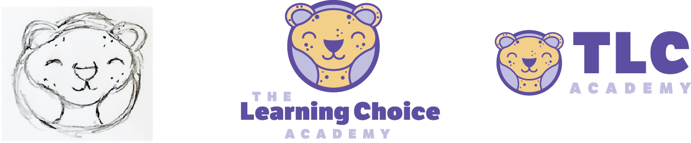
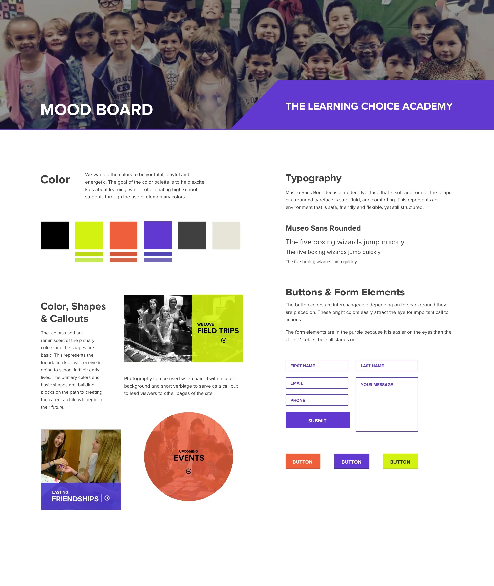

One team, one package: research, brand and website
ProcessEvery decision backed by what parents, students, and staff told us during research, so the site speaks directly to them, and answers their questions directly.
-
01
Research & UX
Stakeholder interviews, a family survey, three personas, user journeys and a new site architecture.
-
02
Brand identity
A redesigned logo and mascot, a youthful color palette and a friendly type system.
-
03
Website
A responsive site with paths to each resource center, events, and enrollment on every page.
Overview
The Learning Choice Academy is a San Diego public charter home–school. The goal of this project is to create an experience that promotes an engaging atmosphere, while providing a sense of safety, information about the charter homeschool experience, and also motivates students to succeed.
Research
To learn more about the specific needs, and to set goals for the user experience design we conducted qualitative research. We conducted phone interviews and administered a survey via Survey Monkey placed on the website. We talked to 12 stakeholders throughout The Learning Choice Academy including staff and teachers. We collected 42 survey responses and heard from parents, teachers, and students.
- 12
- Stakeholder phone interviews with staff and teachers
- 42
- Survey responses via an on-site Survey Monkey survey
- 3
- Audiences heard from: parents, teachers, students
StrategyTalking to every audience before designing kept the school from building a site around its org chart. The research set the priorities for everything that followed.
Three people, three reasons to visit
The challenge
The Learning Choice Academy has 4 separate resource center locations, with varied curriculum. Our challenge was to present all resource centers as one, while highlighting what makes them unique. The site is used by students to find curriculum, and connect with classmates and teachers. It's also used by parents to find extra curricular events, and build community. The site has a secondary purpose of acting as marketing page to drive enrollment and make free public education accessible to all.
Our solution
We re-organized the site architecture to focus on way finding for the curriculum, and programs they offered, and created a section that specifically called out the 4 locations. We defined clear pathways to individual resource centers, and paired that with upcoming events. The secondary purpose of the site is to drive enrollment and to build a sense of community and trust. We put the stories of the families up front, and made sure the enrollment button was clear, visible, and on every page.
StrategyOrganize by what people come to do, not by department. Current families find events and resources fast, while prospective families always have a clear next step toward enrolling.
Brand: from sketch to mascot

The colors are youthful, playful and energetic, chosen to excite kids about learning without alienating high school students. Primary colors and basic shapes echo the foundation kids receive early in school. Museo Sans Rounded keeps the type soft, safe and friendly, yet still structured.
StrategyOne brand that works for a kindergartner and a high school senior, so all four resource centers look like the same school.

The redesign
Revisiting the homepage as a story you scroll through.
Revisiting the project, I kept the original architecture, content and brand, and rebuilt the homepage as a sequence of full-screen scenes. Each scene carries one idea from the research: what TLC is, a day on site, the four resource centers, student stories, programs by grade, and the community that leads to enrollment.
StrategyKeep what the research proved and change only the delivery. The redesign tells the same story with more motion and less reading, which suits families browsing on their phones.
Outcome
Four resource centers presented as one school, with a site that serves current families every week and gives new families a clear path to enroll.
- Research
- Personas, journeys and an architecture the school can use for future pages and programs.
- Brand
- A new logo, mascot and palette ready for print, signage, events and social.
- Website
- Paths to each center, events by location, and enrollment on every page.
- Measure
- Enrollment starts, event registrations, and how fast families find what they came for.
Running an education platform or multi-location program?
I can research your audiences, reorganize your site around what they need, and refresh the brand so every location reads as one organization.
Services on this project
- UX research
- Information architecture
- Brand & identity
- Website design